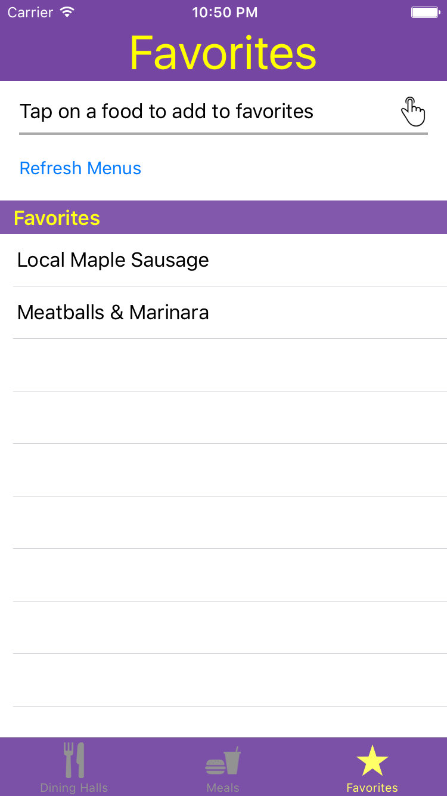
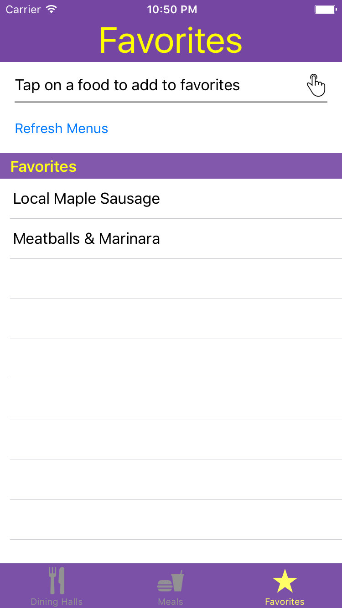

Eph Meals
Eph Meals is an iOS app that I built for Williams in 2016. It wraps the basic JSON API provided by Dining Services, and caches the daily results in local memory. I implemented several ordering services (by meal time, by dining hall), as well as tagged items as VEGAN or GLUTEN FREE. I also added a favoriting feature that notifies users when their favorite foods are being served.
 
